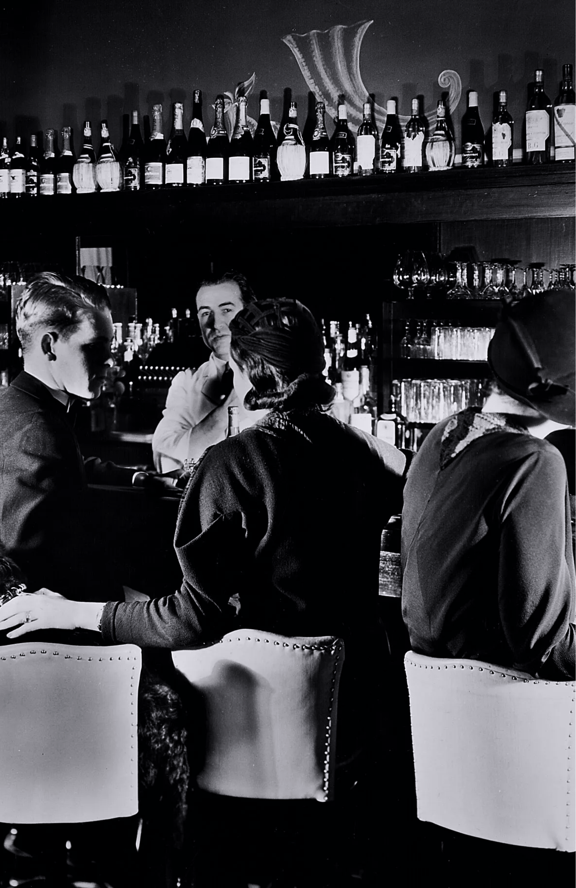
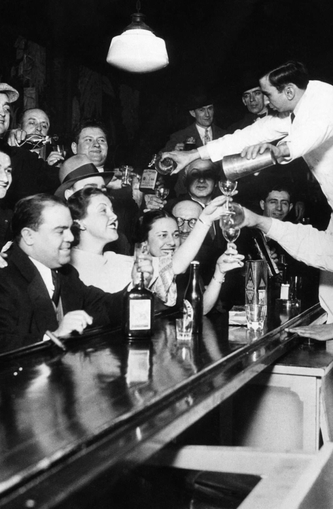
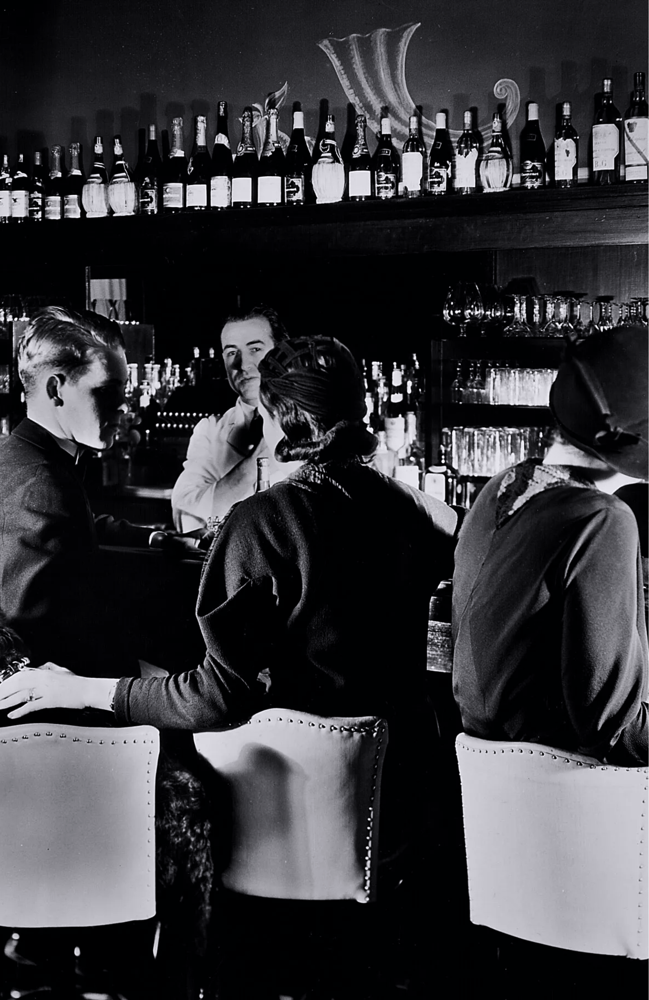
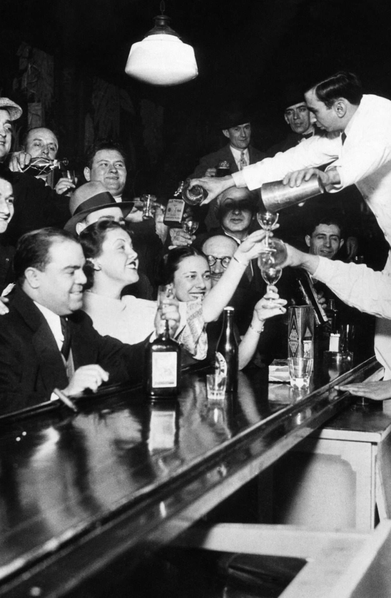

Бурные двадцатые... Рост промышленности, расцвет джаза, экономический взлет и столь же стремительное падение.
Сухой закон. Созданный с благими намерениями, он привел к росту преступности и бутлегерства, повсеместному производству низкокачественного алкоголя и открытию speakeasy баров.
Спиртное было настолько неприятным на вкус, что бармену приходилось демонстрировать находчивость и маскировать вкус низкопробного алкоголя. Именно так появились многие знакомые нам коктейли.